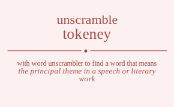

The word found after unscrambling tokeney means that the principal theme in a speech or literary work, a fundamental or central idea, (music) the first note of a diatonic scale, set the keynote of, give the keynote address to (an audience), .

The word found after unscrambling tokeney means that the principal theme in a speech or literary work, a fundamental or central idea, (music) the first note of a diatonic scale, set the keynote of, give the keynote address to (an audience), .
You can also find solutions for different combinations of letters in tokeney like tokeney tokenye tokeeny tokeeyn tokeyne tokeyen tokneey tokneye tokneey tokneye toknyee toknyee tokeeny tokeeyn tokeney tokenye tokeyen tokeyne tokyene tokyeen tokynee tokynee tokyeen tokyene toekney toeknye toekeny toekeyn toekyne toekyen toenkey toenkye toeneky toeneyk toenyke toenyek toeekny toeekyn toeenky toeenyk toeeykn toeeynk toeykne toeyken toeynke toeynek toeyekn toeyenk tonkeey tonkeye tonkeey tonkeye tonkyee tonkyee tonekey tonekye toneeky toneeyk toneyke toneyek tonekey tonekye toneeky toneeyk toneyke toneyek tonykee tonykee tonyeke tonyeek tonyeke tonyeek toekeny toekeyn toekney toeknye toekyen toekyne toeekny toeekyn toeenky toeenyk toeeykn toeeynk toenkey toenkye toeneky toeneyk toenyke toenyek toeyken toeykne toeyekn toeyenk toeynke toeynek toykene toykeen toyknee toyknee toykeen toykene toyekne toyeken toyenke toyenek toyeekn toyeenk toynkee toynkee toyneke toyneek toyneke toyneek toyeken toyekne toyeekn toyeenk toyenke toyenek tkoeney tkoenye tkoeeny tkoeeyn tkoeyne tkoeyen tkoneey tkoneye tkoneey tkoneye tkonyee tkonyee tkoeeny tkoeeyn tkoeney tkoenye tkoeyen tkoeyne tkoyene tkoyeen tkoynee tkoynee tkoyeen tkoyene tkeoney tkeonye tkeoeny tkeoeyn tkeoyne tkeoyen tkenoey tkenoye tkeneoy tkeneyo tkenyoe tkenyeo tkeeony tkeeoyn tkeenoy tkeenyo tkeeyon tkeeyno tkeyone tkeyoen tkeynoe tkeyneo tkeyeon tkeyeno tknoeey tknoeye tknoeey tknoeye tknoyee tknoyee tkneoey tkneoye tkneeoy tkneeyo tkneyoe tkneyeo tkneoey tkneoye tkneeoy tkneeyo tkneyoe tkneyeo tknyoee tknyoee tknyeoe tknyeeo tknyeoe tknyeeo tkeoeny tkeoeyn tkeoney tkeonye tkeoyen tkeoyne tkeeony tkeeoyn tkeenoy tkeenyo tkeeyon tkeeyno tkenoey tkenoye tkeneoy tkeneyo tkenyoe tkenyeo tkeyoen tkeyone tkeyeon tkeyeno tkeynoe tkeyneo tkyoene tkyoeen tkyonee tkyonee tkyoeen tkyoene tkyeone tkyeoen tkyenoe tkyeneo tkyeeon tkyeeno tkynoee tkynoee tkyneoe tkyneeo tkyneoe tkyneeo tkyeoen tkyeone tkyeeon tkyeeno tkyenoe tkyeneo teokney teoknye teokeny teokeyn teokyne teokyen teonkey teonkye teoneky teoneyk teonyke teonyek teoekny teoekyn teoenky teoenyk teoeykn teoeynk teoykne teoyken teoynke teoynek teoyekn teoyenk tekoney tekonye tekoeny tekoeyn tekoyne tekoyen teknoey teknoye tekneoy tekneyo teknyoe teknyeo tekeony tekeoyn tekenoy tekenyo tekeyon tekeyno tekyone tekyoen tekynoe tekyneo tekyeon tekyeno tenokey tenokye tenoeky tenoeyk tenoyke tenoyek tenkoey tenkoye tenkeoy tenkeyo tenkyoe tenkyeo teneoky teneoyk tenekoy tenekyo teneyok teneyko tenyoke tenyoek tenykoe tenykeo tenyeok tenyeko teeokny teeokyn teeonky teeonyk teeoykn teeoynk teekony teekoyn teeknoy teeknyo teekyon teekyno teenoky teenoyk teenkoy teenkyo teenyok teenyko teeyokn teeyonk teeykon teeykno teeynok teeynko teyokne teyoken teyonke teyonek teyoekn teyoenk teykone teykoen teyknoe teykneo teykeon teykeno teynoke teynoek teynkoe teynkeo teyneok teyneko teyeokn teyeonk teyekon teyekno teyenok teyenko tnokeey tnokeye tnokeey tnokeye tnokyee tnokyee tnoekey tnoekye tnoeeky tnoeeyk tnoeyke tnoeyek tnoekey tnoekye tnoeeky tnoeeyk tnoeyke tnoeyek tnoykee tnoykee tnoyeke tnoyeek tnoyeke tnoyeek tnkoeey tnkoeye tnkoeey tnkoeye tnkoyee tnkoyee tnkeoey tnkeoye tnkeeoy tnkeeyo tnkeyoe tnkeyeo tnkeoey tnkeoye tnkeeoy tnkeeyo tnkeyoe tnkeyeo tnkyoee tnkyoee tnkyeoe tnkyeeo tnkyeoe tnkyeeo tneokey tneokye tneoeky tneoeyk tneoyke tneoyek tnekoey tnekoye tnekeoy tnekeyo tnekyoe tnekyeo tneeoky tneeoyk tneekoy tneekyo tneeyok tneeyko tneyoke tneyoek tneykoe tneykeo tneyeok tneyeko tneokey tneokye tneoeky tneoeyk tneoyke tneoyek tnekoey tnekoye tnekeoy tnekeyo tnekyoe tnekyeo tneeoky tneeoyk tneekoy tneekyo tneeyok tneeyko tneyoke tneyoek tneykoe tneykeo tneyeok tneyeko tnyokee tnyokee tnyoeke tnyoeek tnyoeke tnyoeek tnykoee tnykoee tnykeoe tnykeeo tnykeoe tnykeeo tnyeoke tnyeoek tnyekoe tnyekeo tnyeeok tnyeeko tnyeoke tnyeoek tnyekoe tnyekeo tnyeeok tnyeeko teokeny teokeyn teokney teoknye teokyen teokyne teoekny teoekyn teoenky teoenyk teoeykn teoeynk teonkey teonkye teoneky teoneyk teonyke teonyek teoyken teoykne teoyekn teoyenk teoynke teoynek tekoeny tekoeyn tekoney tekonye tekoyen tekoyne tekeony tekeoyn tekenoy tekenyo tekeyon tekeyno teknoey teknoye tekneoy tekneyo teknyoe teknyeo tekyoen tekyone tekyeon tekyeno tekynoe tekyneo teeokny teeokyn teeonky teeonyk teeoykn teeoynk teekony teekoyn teeknoy teeknyo teekyon teekyno teenoky teenoyk teenkoy teenkyo teenyok teenyko teeyokn teeyonk teeykon teeykno teeynok teeynko tenokey tenokye tenoeky tenoeyk tenoyke tenoyek tenkoey tenkoye tenkeoy tenkeyo tenkyoe tenkyeo teneoky teneoyk tenekoy tenekyo teneyok teneyko tenyoke tenyoek tenykoe tenykeo tenyeok tenyeko teyoken teyokne teyoekn teyoenk teyonke teyonek teykoen teykone teykeon teykeno teyknoe teykneo teyeokn teyeonk teyekon teyekno teyenok teyenko teynoke teynoek teynkoe teynkeo teyneok teyneko tyokene tyokeen tyoknee tyoknee tyokeen tyokene tyoekne tyoeken tyoenke tyoenek tyoeekn tyoeenk tyonkee tyonkee tyoneke tyoneek tyoneke tyoneek tyoeken tyoekne tyoeekn tyoeenk tyoenke tyoenek tykoene tykoeen tykonee tykonee tykoeen tykoene tykeone tykeoen tykenoe tykeneo tykeeon tykeeno tyknoee tyknoee tykneoe tykneeo tykneoe tykneeo tykeoen tykeone tykeeon tykeeno tykenoe tykeneo tyeokne tyeoken tyeonke tyeonek tyeoekn tyeoenk tyekone tyekoen tyeknoe tyekneo tyekeon tyekeno tyenoke tyenoek tyenkoe tyenkeo tyeneok tyeneko tyeeokn tyeeonk tyeekon tyeekno tyeenok tyeenko tynokee tynokee tynoeke tynoeek tynoeke tynoeek tynkoee tynkoee tynkeoe tynkeeo tynkeoe tynkeeo tyneoke tyneoek tynekoe tynekeo tyneeok tyneeko tyneoke tyneoek tynekoe tynekeo tyneeok tyneeko tyeoken tyeokne tyeoekn tyeoenk tyeonke tyeonek tyekoen tyekone tyekeon tyekeno tyeknoe tyekneo tyeeokn tyeeonk tyeekon tyeekno tyeenok tyeenko tyenoke tyenoek tyenkoe tyenkeo tyeneok tyeneko otkeney otkenye otkeeny otkeeyn otkeyne otkeyen otkneey otkneye otkneey otkneye otknyee otknyee otkeeny otkeeyn otkeney otkenye otkeyen otkeyne otkyene otkyeen otkynee otkynee otkyeen otkyene otekney oteknye otekeny otekeyn otekyne otekyen otenkey otenkye oteneky oteneyk otenyke otenyek oteekny oteekyn oteenky oteenyk oteeykn oteeynk oteykne oteyken oteynke oteynek oteyekn oteyenk otnkeey otnkeye otnkeey otnkeye otnkyee otnkyee otnekey otnekye otneeky otneeyk otneyke otneyek otnekey otnekye otneeky otneeyk otneyke otneyek otnykee otnykee otnyeke otnyeek otnyeke otnyeek otekeny otekeyn otekney oteknye otekyen otekyne oteekny oteekyn oteenky oteenyk oteeykn oteeynk otenkey otenkye oteneky oteneyk otenyke otenyek oteyken oteykne oteyekn oteyenk oteynke oteynek otykene otykeen otyknee otyknee otykeen otykene otyekne otyeken otyenke otyenek otyeekn otyeenk otynkee otynkee otyneke otyneek otyneke otyneek otyeken otyekne otyeekn otyeenk otyenke otyenek okteney oktenye okteeny okteeyn okteyne okteyen oktneey oktneye oktneey oktneye oktnyee oktnyee okteeny okteeyn okteney oktenye okteyen okteyne oktyene oktyeen oktynee oktynee oktyeen oktyene oketney oketnye oketeny oketeyn oketyne oketyen okentey okentye okenety okeneyt okenyte okenyet okeetny okeetyn okeenty okeenyt okeeytn okeeynt okeytne okeyten okeynte okeynet okeyetn okeyent oknteey oknteye oknteey oknteye okntyee okntyee oknetey oknetye okneety okneeyt okneyte okneyet oknetey oknetye okneety okneeyt okneyte okneyet oknytee oknytee oknyete oknyeet oknyete oknyeet oketeny oketeyn oketney oketnye oketyen oketyne okeetny okeetyn okeenty okeenyt okeeytn okeeynt okentey okentye okenety okeneyt okenyte okenyet okeyten okeytne okeyetn okeyent okeynte okeynet okytene okyteen okytnee okytnee okyteen okytene okyetne okyeten okyente okyenet okyeetn okyeent okyntee okyntee okynete okyneet okynete okyneet okyeten okyetne okyeetn okyeent okyente okyenet oetkney oetknye oetkeny oetkeyn oetkyne oetkyen oetnkey oetnkye oetneky oetneyk oetnyke oetnyek oetekny oetekyn oetenky oetenyk oeteykn oeteynk oetykne oetyken oetynke oetynek oetyekn oetyenk oektney oektnye oekteny oekteyn oektyne oektyen oekntey oekntye oeknety oekneyt oeknyte oeknyet oeketny oeketyn oekenty oekenyt oekeytn oekeynt oekytne oekyten oekynte oekynet oekyetn oekyent oentkey oentkye oenteky oenteyk oentyke oentyek oenktey oenktye oenkety oenkeyt oenkyte oenkyet oenetky oenetyk oenekty oenekyt oeneytk oeneykt oenytke oenytek oenykte oenyket oenyetk oenyekt oeetkny oeetkyn oeetnky oeetnyk oeetykn oeetynk oeektny oeektyn oeeknty oeeknyt oeekytn oeekynt oeentky oeentyk oeenkty oeenkyt oeenytk oeenykt oeeytkn oeeytnk oeeyktn oeeyknt oeeyntk oeeynkt oeytkne oeytken oeytnke oeytnek oeytekn oeytenk oeyktne oeykten oeyknte oeyknet oeyketn oeykent oeyntke oeyntek oeynkte oeynket oeynetk oeynekt oeyetkn oeyetnk oeyektn oeyeknt oeyentk oeyenkt ontkeey ontkeye ontkeey ontkeye ontkyee ontkyee ontekey ontekye onteeky onteeyk onteyke onteyek ontekey ontekye onteeky onteeyk onteyke onteyek ontykee ontykee ontyeke ontyeek ontyeke ontyeek onkteey onkteye onkteey onkteye onktyee onktyee onketey onketye onkeety onkeeyt onkeyte onkeyet onketey onketye onkeety onkeeyt onkeyte onkeyet onkytee onkytee onkyete onkyeet onkyete onkyeet onetkey onetkye oneteky oneteyk onetyke onetyek onektey onektye onekety onekeyt onekyte onekyet oneetky oneetyk oneekty oneekyt oneeytk oneeykt oneytke oneytek oneykte oneyket oneyetk oneyekt onetkey onetkye oneteky oneteyk onetyke onetyek onektey onektye onekety onekeyt onekyte onekyet oneetky oneetyk oneekty oneekyt oneeytk oneeykt oneytke oneytek oneykte oneyket oneyetk oneyekt onytkee onytkee onyteke onyteek onyteke onyteek onyktee onyktee onykete onykeet onykete onykeet onyetke onyetek onyekte onyeket onyeetk onyeekt onyetke onyetek onyekte onyeket onyeetk onyeekt oetkeny oetkeyn oetkney oetknye oetkyen oetkyne oetekny oetekyn oetenky oetenyk oeteykn oeteynk oetnkey oetnkye oetneky oetneyk oetnyke oetnyek oetyken oetykne oetyekn oetyenk oetynke oetynek oekteny oekteyn oektney oektnye oektyen oektyne oeketny oeketyn oekenty oekenyt oekeytn oekeynt oekntey oekntye oeknety oekneyt oeknyte oeknyet oekyten oekytne oekyetn oekyent oekynte oekynet oeetkny oeetkyn oeetnky oeetnyk oeetykn oeetynk oeektny oeektyn oeeknty oeeknyt oeekytn oeekynt oeentky oeentyk oeenkty oeenkyt oeenytk oeenykt oeeytkn oeeytnk oeeyktn oeeyknt oeeyntk oeeynkt oentkey oentkye oenteky oenteyk oentyke oentyek oenktey oenktye oenkety oenkeyt oenkyte oenkyet oenetky oenetyk oenekty oenekyt oeneytk oeneykt oenytke oenytek oenykte oenyket oenyetk oenyekt oeytken oeytkne oeytekn oeytenk oeytnke oeytnek oeykten oeyktne oeyketn oeykent oeyknte oeyknet oeyetkn oeyetnk oeyektn oeyeknt oeyentk oeyenkt oeyntke oeyntek oeynkte oeynket oeynetk oeynekt oytkene oytkeen oytknee oytknee oytkeen oytkene oytekne oyteken oytenke oytenek oyteekn oyteenk oytnkee oytnkee oytneke oytneek oytneke oytneek oyteken oytekne oyteekn oyteenk oytenke oytenek oyktene oykteen oyktnee oyktnee oykteen oyktene oyketne oyketen oykente oykenet oykeetn oykeent oykntee oykntee oyknete oykneet oyknete oykneet oyketen oyketne oykeetn oykeent oykente oykenet oyetkne oyetken oyetnke oyetnek oyetekn oyetenk oyektne oyekten oyeknte oyeknet oyeketn oyekent oyentke oyentek oyenkte oyenket oyenetk oyenekt oyeetkn oyeetnk oyeektn oyeeknt oyeentk oyeenkt oyntkee oyntkee oynteke oynteek oynteke oynteek oynktee oynktee oynkete oynkeet oynkete oynkeet oynetke oynetek oynekte oyneket oyneetk oyneekt oynetke oynetek oynekte oyneket oyneetk oyneekt oyetken oyetkne oyetekn oyetenk oyetnke oyetnek oyekten oyektne oyeketn oyekent oyeknte oyeknet oyeetkn oyeetnk oyeektn oyeeknt oyeentk oyeenkt oyentke oyentek oyenkte oyenket oyenetk oyenekt ktoeney ktoenye ktoeeny ktoeeyn ktoeyne ktoeyen ktoneey ktoneye ktoneey ktoneye ktonyee ktonyee ktoeeny ktoeeyn ktoeney ktoenye ktoeyen ktoeyne ktoyene ktoyeen ktoynee ktoynee ktoyeen ktoyene kteoney kteonye kteoeny kteoeyn kteoyne kteoyen ktenoey ktenoye kteneoy kteneyo ktenyoe ktenyeo kteeony kteeoyn kteenoy kteenyo kteeyon kteeyno kteyone kteyoen kteynoe kteyneo kteyeon kteyeno ktnoeey ktnoeye ktnoeey ktnoeye ktnoyee ktnoyee ktneoey ktneoye ktneeoy ktneeyo ktneyoe ktneyeo ktneoey ktneoye ktneeoy ktneeyo ktneyoe ktneyeo ktnyoee ktnyoee ktnyeoe ktnyeeo ktnyeoe ktnyeeo kteoeny kteoeyn kteoney kteonye kteoyen kteoyne kteeony kteeoyn kteenoy kteenyo kteeyon kteeyno ktenoey ktenoye kteneoy kteneyo ktenyoe ktenyeo kteyoen kteyone kteyeon kteyeno kteynoe kteyneo ktyoene ktyoeen ktyonee ktyonee ktyoeen ktyoene ktyeone ktyeoen ktyenoe ktyeneo ktyeeon ktyeeno ktynoee ktynoee ktyneoe ktyneeo ktyneoe ktyneeo ktyeoen ktyeone ktyeeon ktyeeno ktyenoe ktyeneo koteney kotenye koteeny koteeyn koteyne koteyen kotneey kotneye kotneey kotneye kotnyee kotnyee koteeny koteeyn koteney kotenye koteyen koteyne kotyene kotyeen kotynee kotynee kotyeen kotyene koetney koetnye koeteny koeteyn koetyne koetyen koentey koentye koenety koeneyt koenyte koenyet koeetny koeetyn koeenty koeenyt koeeytn koeeynt koeytne koeyten koeynte koeynet koeyetn koeyent konteey konteye konteey konteye kontyee kontyee konetey konetye koneety koneeyt koneyte koneyet konetey konetye koneety koneeyt koneyte koneyet konytee konytee konyete konyeet konyete konyeet koeteny koeteyn koetney koetnye koetyen koetyne koeetny koeetyn koeenty koeenyt koeeytn koeeynt koentey koentye koenety koeneyt koenyte koenyet koeyten koeytne koeyetn koeyent koeynte koeynet koytene koyteen koytnee koytnee koyteen koytene koyetne koyeten koyente koyenet koyeetn koyeent koyntee koyntee koynete koyneet koynete koyneet koyeten koyetne koyeetn koyeent koyente koyenet ketoney ketonye ketoeny ketoeyn ketoyne ketoyen ketnoey ketnoye ketneoy ketneyo ketnyoe ketnyeo keteony keteoyn ketenoy ketenyo keteyon keteyno ketyone ketyoen ketynoe ketyneo ketyeon ketyeno keotney keotnye keoteny keoteyn keotyne keotyen keontey keontye keonety keoneyt keonyte keonyet keoetny keoetyn keoenty keoenyt keoeytn keoeynt keoytne keoyten keoynte keoynet keoyetn keoyent kentoey kentoye kenteoy kenteyo kentyoe kentyeo kenotey kenotye kenoety kenoeyt kenoyte kenoyet kenetoy kenetyo keneoty keneoyt keneyto keneyot kenytoe kenyteo kenyote kenyoet kenyeto kenyeot keetony keetoyn keetnoy keetnyo keetyon keetyno keeotny keeotyn keeonty keeonyt keeoytn keeoynt keentoy keentyo keenoty keenoyt keenyto keenyot keeyton keeytno keeyotn keeyont keeynto keeynot keytone keytoen keytnoe keytneo keyteon keyteno keyotne keyoten keyonte keyonet keyoetn keyoent keyntoe keynteo keynote keynoet keyneto keyneot keyeton keyetno keyeotn keyeont keyento keyenot kntoeey kntoeye kntoeey kntoeye kntoyee kntoyee knteoey knteoye knteeoy knteeyo knteyoe knteyeo knteoey knteoye knteeoy knteeyo knteyoe knteyeo kntyoee kntyoee kntyeoe kntyeeo kntyeoe kntyeeo knoteey knoteye knoteey knoteye knotyee knotyee knoetey knoetye knoeety knoeeyt knoeyte knoeyet knoetey knoetye knoeety knoeeyt knoeyte knoeyet knoytee knoytee knoyete knoyeet knoyete knoyeet knetoey knetoye kneteoy kneteyo knetyoe knetyeo kneotey kneotye kneoety kneoeyt kneoyte kneoyet kneetoy kneetyo kneeoty kneeoyt kneeyto kneeyot kneytoe kneyteo kneyote kneyoet kneyeto kneyeot knetoey knetoye kneteoy kneteyo knetyoe knetyeo kneotey kneotye kneoety kneoeyt kneoyte kneoyet kneetoy kneetyo kneeoty kneeoyt kneeyto kneeyot kneytoe kneyteo kneyote kneyoet kneyeto kneyeot knytoee knytoee knyteoe knyteeo knyteoe knyteeo knyotee knyotee knyoete knyoeet knyoete knyoeet knyetoe knyeteo knyeote knyeoet knyeeto knyeeot knyetoe knyeteo knyeote knyeoet knyeeto knyeeot ketoeny ketoeyn ketoney ketonye ketoyen ketoyne keteony keteoyn ketenoy ketenyo keteyon keteyno ketnoey ketnoye ketneoy ketneyo ketnyoe ketnyeo ketyoen ketyone ketyeon ketyeno ketynoe ketyneo keoteny keoteyn keotney keotnye keotyen keotyne keoetny keoetyn keoenty keoenyt keoeytn keoeynt keontey keontye keonety keoneyt keonyte keonyet keoyten keoytne keoyetn keoyent keoynte keoynet keetony keetoyn keetnoy keetnyo keetyon keetyno keeotny keeotyn keeonty keeonyt keeoytn keeoynt keentoy keentyo keenoty keenoyt keenyto keenyot keeyton keeytno keeyotn keeyont keeynto keeynot kentoey kentoye kenteoy kenteyo kentyoe kentyeo kenotey kenotye kenoety kenoeyt kenoyte kenoyet kenetoy kenetyo keneoty keneoyt keneyto keneyot kenytoe kenyteo kenyote kenyoet kenyeto kenyeot keytoen keytone keyteon keyteno keytnoe keytneo keyoten keyotne keyoetn keyoent keyonte keyonet keyeton keyetno keyeotn keyeont keyento keyenot keyntoe keynteo keynote keynoet keyneto keyneot kytoene kytoeen kytonee kytonee kytoeen kytoene kyteone kyteoen kytenoe kyteneo kyteeon kyteeno kytnoee kytnoee kytneoe kytneeo kytneoe kytneeo kyteoen kyteone kyteeon kyteeno kytenoe kyteneo kyotene kyoteen kyotnee kyotnee kyoteen kyotene kyoetne kyoeten kyoente kyoenet kyoeetn kyoeent kyontee kyontee kyonete kyoneet kyonete kyoneet kyoeten kyoetne kyoeetn kyoeent kyoente kyoenet kyetone kyetoen kyetnoe kyetneo kyeteon kyeteno kyeotne kyeoten kyeonte kyeonet kyeoetn kyeoent kyentoe kyenteo kyenote kyenoet kyeneto kyeneot kyeeton kyeetno kyeeotn kyeeont kyeento kyeenot kyntoee kyntoee kynteoe kynteeo kynteoe kynteeo kynotee kynotee kynoete kynoeet kynoete kynoeet kynetoe kyneteo kyneote kyneoet kyneeto kyneeot kynetoe kyneteo kyneote kyneoet kyneeto kyneeot kyetoen kyetone kyeteon kyeteno kyetnoe kyetneo kyeoten kyeotne kyeoetn kyeoent kyeonte kyeonet kyeeton kyeetno kyeeotn kyeeont kyeento kyeenot kyentoe kyenteo kyenote kyenoet kyeneto kyeneot etokney etoknye etokeny etokeyn etokyne etokyen etonkey etonkye etoneky etoneyk etonyke etonyek etoekny etoekyn etoenky etoenyk etoeykn etoeynk etoykne etoyken etoynke etoynek etoyekn etoyenk etkoney etkonye etkoeny etkoeyn etkoyne etkoyen etknoey etknoye etkneoy etkneyo etknyoe etknyeo etkeony etkeoyn etkenoy etkenyo etkeyon etkeyno etkyone etkyoen etkynoe etkyneo etkyeon etkyeno etnokey etnokye etnoeky etnoeyk etnoyke etnoyek etnkoey etnkoye etnkeoy etnkeyo etnkyoe etnkyeo etneoky etneoyk etnekoy etnekyo etneyok etneyko etnyoke etnyoek etnykoe etnykeo etnyeok etnyeko eteokny eteokyn eteonky eteonyk eteoykn eteoynk etekony etekoyn eteknoy eteknyo etekyon etekyno etenoky etenoyk etenkoy etenkyo etenyok etenyko eteyokn eteyonk eteykon eteykno eteynok eteynko etyokne etyoken etyonke etyonek etyoekn etyoenk etykone etykoen etyknoe etykneo etykeon etykeno etynoke etynoek etynkoe etynkeo etyneok etyneko etyeokn etyeonk etyekon etyekno etyenok etyenko eotkney eotknye eotkeny eotkeyn eotkyne eotkyen eotnkey eotnkye eotneky eotneyk eotnyke eotnyek eotekny eotekyn eotenky eotenyk eoteykn eoteynk eotykne eotyken eotynke eotynek eotyekn eotyenk eoktney eoktnye eokteny eokteyn eoktyne eoktyen eokntey eokntye eoknety eokneyt eoknyte eoknyet eoketny eoketyn eokenty eokenyt eokeytn eokeynt eokytne eokyten eokynte eokynet eokyetn eokyent eontkey eontkye eonteky eonteyk eontyke eontyek eonktey eonktye eonkety eonkeyt eonkyte eonkyet eonetky eonetyk eonekty eonekyt eoneytk eoneykt eonytke eonytek eonykte eonyket eonyetk eonyekt eoetkny eoetkyn eoetnky eoetnyk eoetykn eoetynk eoektny eoektyn eoeknty eoeknyt eoekytn eoekynt eoentky eoentyk eoenkty eoenkyt eoenytk eoenykt eoeytkn eoeytnk eoeyktn eoeyknt eoeyntk eoeynkt eoytkne eoytken eoytnke eoytnek eoytekn eoytenk eoyktne eoykten eoyknte eoyknet eoyketn eoykent eoyntke eoyntek eoynkte eoynket eoynetk eoynekt eoyetkn eoyetnk eoyektn eoyeknt eoyentk eoyenkt ektoney ektonye ektoeny ektoeyn ektoyne ektoyen ektnoey ektnoye ektneoy ektneyo ektnyoe ektnyeo ekteony ekteoyn ektenoy ektenyo ekteyon ekteyno ektyone ektyoen ektynoe ektyneo ektyeon ektyeno ekotney ekotnye ekoteny ekoteyn ekotyne ekotyen ekontey ekontye ekonety ekoneyt ekonyte ekonyet ekoetny ekoetyn ekoenty ekoenyt ekoeytn ekoeynt ekoytne ekoyten ekoynte ekoynet ekoyetn ekoyent ekntoey ekntoye eknteoy eknteyo ekntyoe ekntyeo eknotey eknotye eknoety eknoeyt eknoyte eknoyet eknetoy eknetyo ekneoty ekneoyt ekneyto ekneyot eknytoe eknyteo eknyote eknyoet eknyeto eknyeot eketony eketoyn eketnoy eketnyo eketyon eketyno ekeotny ekeotyn ekeonty ekeonyt ekeoytn ekeoynt ekentoy ekentyo ekenoty ekenoyt ekenyto ekenyot ekeyton ekeytno ekeyotn ekeyont ekeynto ekeynot ekytone ekytoen ekytnoe ekytneo ekyteon ekyteno ekyotne ekyoten ekyonte ekyonet ekyoetn ekyoent ekyntoe ekynteo ekynote ekynoet ekyneto ekyneot ekyeton ekyetno ekyeotn ekyeont ekyento ekyenot entokey entokye entoeky entoeyk entoyke entoyek entkoey entkoye entkeoy entkeyo entkyoe entkyeo enteoky enteoyk entekoy entekyo enteyok enteyko entyoke entyoek entykoe entykeo entyeok entyeko enotkey enotkye enoteky enoteyk enotyke enotyek enoktey enoktye enokety enokeyt enokyte enokyet enoetky enoetyk enoekty enoekyt enoeytk enoeykt enoytke enoytek enoykte enoyket enoyetk enoyekt enktoey enktoye enkteoy enkteyo enktyoe enktyeo enkotey enkotye enkoety enkoeyt enkoyte enkoyet enketoy enketyo enkeoty enkeoyt enkeyto enkeyot enkytoe enkyteo enkyote enkyoet enkyeto enkyeot enetoky enetoyk enetkoy enetkyo enetyok enetyko eneotky eneotyk eneokty eneokyt eneoytk eneoykt enektoy enektyo enekoty enekoyt enekyto enekyot eneytok eneytko eneyotk eneyokt eneykto eneykot enytoke enytoek enytkoe enytkeo enyteok enyteko enyotke enyotek enyokte enyoket enyoetk enyoekt enyktoe enykteo enykote enykoet enyketo enykeot enyetok enyetko enyeotk enyeokt enyekto enyekot eetokny eetokyn eetonky eetonyk eetoykn eetoynk eetkony eetkoyn eetknoy eetknyo eetkyon eetkyno eetnoky eetnoyk eetnkoy eetnkyo eetnyok eetnyko eetyokn eetyonk eetykon eetykno eetynok eetynko eeotkny eeotkyn eeotnky eeotnyk eeotykn eeotynk eeoktny eeoktyn eeoknty eeoknyt eeokytn eeokynt eeontky eeontyk eeonkty eeonkyt eeonytk eeonykt eeoytkn eeoytnk eeoyktn eeoyknt eeoyntk eeoynkt eektony eektoyn eektnoy eektnyo eektyon eektyno eekotny eekotyn eekonty eekonyt eekoytn eekoynt eekntoy eekntyo eeknoty eeknoyt eeknyto eeknyot eekyton eekytno eekyotn eekyont eekynto eekynot eentoky eentoyk eentkoy eentkyo eentyok eentyko eenotky eenotyk eenokty eenokyt eenoytk eenoykt eenktoy eenktyo eenkoty eenkoyt eenkyto eenkyot eenytok eenytko eenyotk eenyokt eenykto eenykot eeytokn eeytonk eeytkon eeytkno eeytnok eeytnko eeyotkn eeyotnk eeyoktn eeyoknt eeyontk eeyonkt eeykton eeyktno eeykotn eeykont eeyknto eeyknot eeyntok eeyntko eeynotk eeynokt eeynkto eeynkot eytokne eytoken eytonke eytonek eytoekn eytoenk eytkone eytkoen eytknoe eytkneo eytkeon eytkeno eytnoke eytnoek eytnkoe eytnkeo eytneok eytneko eyteokn eyteonk eytekon eytekno eytenok eytenko eyotkne eyotken eyotnke eyotnek eyotekn eyotenk eyoktne eyokten eyoknte eyoknet eyoketn eyokent eyontke eyontek eyonkte eyonket eyonetk eyonekt eyoetkn eyoetnk eyoektn eyoeknt eyoentk eyoenkt eyktone eyktoen eyktnoe eyktneo eykteon eykteno eykotne eykoten eykonte eykonet eykoetn eykoent eykntoe eyknteo eyknote eyknoet eykneto eykneot eyketon eyketno eykeotn eykeont eykento eykenot eyntoke eyntoek eyntkoe eyntkeo eynteok eynteko eynotke eynotek eynokte eynoket eynoetk eynoekt eynktoe eynkteo eynkote eynkoet eynketo eynkeot eynetok eynetko eyneotk eyneokt eynekto eynekot eyetokn eyetonk eyetkon eyetkno eyetnok eyetnko eyeotkn eyeotnk eyeoktn eyeoknt eyeontk eyeonkt eyekton eyektno eyekotn eyekont eyeknto eyeknot eyentok eyentko eyenotk eyenokt eyenkto eyenkot ntokeey ntokeye ntokeey ntokeye ntokyee ntokyee ntoekey ntoekye ntoeeky ntoeeyk ntoeyke ntoeyek ntoekey ntoekye ntoeeky ntoeeyk ntoeyke ntoeyek ntoykee ntoykee ntoyeke ntoyeek ntoyeke ntoyeek ntkoeey ntkoeye ntkoeey ntkoeye ntkoyee ntkoyee ntkeoey ntkeoye ntkeeoy ntkeeyo ntkeyoe ntkeyeo ntkeoey ntkeoye ntkeeoy ntkeeyo ntkeyoe ntkeyeo ntkyoee ntkyoee ntkyeoe ntkyeeo ntkyeoe ntkyeeo nteokey nteokye nteoeky nteoeyk nteoyke nteoyek ntekoey ntekoye ntekeoy ntekeyo ntekyoe ntekyeo nteeoky nteeoyk nteekoy nteekyo nteeyok nteeyko nteyoke nteyoek nteykoe nteykeo nteyeok nteyeko nteokey nteokye nteoeky nteoeyk nteoyke nteoyek ntekoey ntekoye ntekeoy ntekeyo ntekyoe ntekyeo nteeoky nteeoyk nteekoy nteekyo nteeyok nteeyko nteyoke nteyoek nteykoe nteykeo nteyeok nteyeko ntyokee ntyokee ntyoeke ntyoeek ntyoeke ntyoeek ntykoee ntykoee ntykeoe ntykeeo ntykeoe ntykeeo ntyeoke ntyeoek ntyekoe ntyekeo ntyeeok ntyeeko ntyeoke ntyeoek ntyekoe ntyekeo ntyeeok ntyeeko notkeey notkeye notkeey notkeye notkyee notkyee notekey notekye noteeky noteeyk noteyke noteyek notekey notekye noteeky noteeyk noteyke noteyek notykee notykee notyeke notyeek notyeke notyeek nokteey nokteye nokteey nokteye noktyee noktyee noketey noketye nokeety nokeeyt nokeyte nokeyet noketey noketye nokeety nokeeyt nokeyte nokeyet nokytee nokytee nokyete nokyeet nokyete nokyeet noetkey noetkye noeteky noeteyk noetyke noetyek noektey noektye noekety noekeyt noekyte noekyet noeetky noeetyk noeekty noeekyt noeeytk noeeykt noeytke noeytek noeykte noeyket noeyetk noeyekt noetkey noetkye noeteky noeteyk noetyke noetyek noektey noektye noekety noekeyt noekyte noekyet noeetky noeetyk noeekty noeekyt noeeytk noeeykt noeytke noeytek noeykte noeyket noeyetk noeyekt noytkee noytkee noyteke noyteek noyteke noyteek noyktee noyktee noykete noykeet noykete noykeet noyetke noyetek noyekte noyeket noyeetk noyeekt noyetke noyetek noyekte noyeket noyeetk noyeekt nktoeey nktoeye nktoeey nktoeye nktoyee nktoyee nkteoey nkteoye nkteeoy nkteeyo nkteyoe nkteyeo nkteoey nkteoye nkteeoy nkteeyo nkteyoe nkteyeo nktyoee nktyoee nktyeoe nktyeeo nktyeoe nktyeeo nkoteey nkoteye nkoteey nkoteye nkotyee nkotyee nkoetey nkoetye nkoeety nkoeeyt nkoeyte nkoeyet nkoetey nkoetye nkoeety nkoeeyt nkoeyte nkoeyet nkoytee nkoytee nkoyete nkoyeet nkoyete nkoyeet nketoey nketoye nketeoy nketeyo nketyoe nketyeo nkeotey nkeotye nkeoety nkeoeyt nkeoyte nkeoyet nkeetoy nkeetyo nkeeoty nkeeoyt nkeeyto nkeeyot nkeytoe nkeyteo nkeyote nkeyoet nkeyeto nkeyeot nketoey nketoye nketeoy nketeyo nketyoe nketyeo nkeotey nkeotye nkeoety nkeoeyt nkeoyte nkeoyet nkeetoy nkeetyo nkeeoty nkeeoyt nkeeyto nkeeyot nkeytoe nkeyteo nkeyote nkeyoet nkeyeto nkeyeot nkytoee nkytoee nkyteoe nkyteeo nkyteoe nkyteeo nkyotee nkyotee nkyoete nkyoeet nkyoete nkyoeet nkyetoe nkyeteo nkyeote nkyeoet nkyeeto nkyeeot nkyetoe nkyeteo nkyeote nkyeoet nkyeeto nkyeeot netokey netokye netoeky netoeyk netoyke netoyek netkoey netkoye netkeoy netkeyo netkyoe netkyeo neteoky neteoyk netekoy netekyo neteyok neteyko netyoke netyoek netykoe netykeo netyeok netyeko neotkey neotkye neoteky neoteyk neotyke neotyek neoktey neoktye neokety neokeyt neokyte neokyet neoetky neoetyk neoekty neoekyt neoeytk neoeykt neoytke neoytek neoykte neoyket neoyetk neoyekt nektoey nektoye nekteoy nekteyo nektyoe nektyeo nekotey nekotye nekoety nekoeyt nekoyte nekoyet neketoy neketyo nekeoty nekeoyt nekeyto nekeyot nekytoe nekyteo nekyote nekyoet nekyeto nekyeot neetoky neetoyk neetkoy neetkyo neetyok neetyko neeotky neeotyk neeokty neeokyt neeoytk neeoykt neektoy neektyo neekoty neekoyt neekyto neekyot neeytok neeytko neeyotk neeyokt neeykto neeykot neytoke neytoek neytkoe neytkeo neyteok neyteko neyotke neyotek neyokte neyoket neyoetk neyoekt neyktoe neykteo neykote neykoet neyketo neykeot neyetok neyetko neyeotk neyeokt neyekto neyekot netokey netokye netoeky netoeyk netoyke netoyek netkoey netkoye netkeoy netkeyo netkyoe netkyeo neteoky neteoyk netekoy netekyo neteyok neteyko netyoke netyoek netykoe netykeo netyeok netyeko neotkey neotkye neoteky neoteyk neotyke neotyek neoktey neoktye neokety neokeyt neokyte neokyet neoetky neoetyk neoekty neoekyt neoeytk neoeykt neoytke neoytek neoykte neoyket neoyetk neoyekt nektoey nektoye nekteoy nekteyo nektyoe nektyeo nekotey nekotye nekoety nekoeyt nekoyte nekoyet neketoy neketyo nekeoty nekeoyt nekeyto nekeyot nekytoe nekyteo nekyote nekyoet nekyeto nekyeot neetoky neetoyk neetkoy neetkyo neetyok neetyko neeotky neeotyk neeokty neeokyt neeoytk neeoykt neektoy neektyo neekoty neekoyt neekyto neekyot neeytok neeytko neeyotk neeyokt neeykto neeykot neytoke neytoek neytkoe neytkeo neyteok neyteko neyotke neyotek neyokte neyoket neyoetk neyoekt neyktoe neykteo neykote neykoet neyketo neykeot neyetok neyetko neyeotk neyeokt neyekto neyekot nytokee nytokee nytoeke nytoeek nytoeke nytoeek nytkoee nytkoee nytkeoe nytkeeo nytkeoe nytkeeo nyteoke nyteoek nytekoe nytekeo nyteeok nyteeko nyteoke nyteoek nytekoe nytekeo nyteeok nyteeko nyotkee nyotkee nyoteke nyoteek nyoteke nyoteek nyoktee nyoktee nyokete nyokeet nyokete nyokeet nyoetke nyoetek nyoekte nyoeket nyoeetk nyoeekt nyoetke nyoetek nyoekte nyoeket nyoeetk nyoeekt nyktoee nyktoee nykteoe nykteeo nykteoe nykteeo nykotee nykotee nykoete nykoeet nykoete nykoeet nyketoe nyketeo nykeote nykeoet nykeeto nykeeot nyketoe nyketeo nykeote nykeoet nykeeto nykeeot nyetoke nyetoek nyetkoe nyetkeo nyeteok nyeteko nyeotke nyeotek nyeokte nyeoket nyeoetk nyeoekt nyektoe nyekteo nyekote nyekoet nyeketo nyekeot nyeetok nyeetko nyeeotk nyeeokt nyeekto nyeekot nyetoke nyetoek nyetkoe nyetkeo nyeteok nyeteko nyeotke nyeotek nyeokte nyeoket nyeoetk nyeoekt nyektoe nyekteo nyekote nyekoet nyeketo nyekeot nyeetok nyeetko nyeeotk nyeeokt nyeekto nyeekot etokeny etokeyn etokney etoknye etokyen etokyne etoekny etoekyn etoenky etoenyk etoeykn etoeynk etonkey etonkye etoneky etoneyk etonyke etonyek etoyken etoykne etoyekn etoyenk etoynke etoynek etkoeny etkoeyn etkoney etkonye etkoyen etkoyne etkeony etkeoyn etkenoy etkenyo etkeyon etkeyno etknoey etknoye etkneoy etkneyo etknyoe etknyeo etkyoen etkyone etkyeon etkyeno etkynoe etkyneo eteokny eteokyn eteonky eteonyk eteoykn eteoynk etekony etekoyn eteknoy eteknyo etekyon etekyno etenoky etenoyk etenkoy etenkyo etenyok etenyko eteyokn eteyonk eteykon eteykno eteynok eteynko etnokey etnokye etnoeky etnoeyk etnoyke etnoyek etnkoey etnkoye etnkeoy etnkeyo etnkyoe etnkyeo etneoky etneoyk etnekoy etnekyo etneyok etneyko etnyoke etnyoek etnykoe etnykeo etnyeok etnyeko etyoken etyokne etyoekn etyoenk etyonke etyonek etykoen etykone etykeon etykeno etyknoe etykneo etyeokn etyeonk etyekon etyekno etyenok etyenko etynoke etynoek etynkoe etynkeo etyneok etyneko eotkeny eotkeyn eotkney eotknye eotkyen eotkyne eotekny eotekyn eotenky eotenyk eoteykn eoteynk eotnkey eotnkye eotneky eotneyk eotnyke eotnyek eotyken eotykne eotyekn eotyenk eotynke eotynek eokteny eokteyn eoktney eoktnye eoktyen eoktyne eoketny eoketyn eokenty eokenyt eokeytn eokeynt eokntey eokntye eoknety eokneyt eoknyte eoknyet eokyten eokytne eokyetn eokyent eokynte eokynet eoetkny eoetkyn eoetnky eoetnyk eoetykn eoetynk eoektny eoektyn eoeknty eoeknyt eoekytn eoekynt eoentky eoentyk eoenkty eoenkyt eoenytk eoenykt eoeytkn eoeytnk eoeyktn eoeyknt eoeyntk eoeynkt eontkey eontkye eonteky eonteyk eontyke eontyek eonktey eonktye eonkety eonkeyt eonkyte eonkyet eonetky eonetyk eonekty eonekyt eoneytk eoneykt eonytke eonytek eonykte eonyket eonyetk eonyekt eoytken eoytkne eoytekn eoytenk eoytnke eoytnek eoykten eoyktne eoyketn eoykent eoyknte eoyknet eoyetkn eoyetnk eoyektn eoyeknt eoyentk eoyenkt eoyntke eoyntek eoynkte eoynket eoynetk eoynekt ektoeny ektoeyn ektoney ektonye ektoyen ektoyne ekteony ekteoyn ektenoy ektenyo ekteyon ekteyno ektnoey ektnoye ektneoy ektneyo ektnyoe ektnyeo ektyoen ektyone ektyeon ektyeno ektynoe ektyneo ekoteny ekoteyn ekotney ekotnye ekotyen ekotyne ekoetny ekoetyn ekoenty ekoenyt ekoeytn ekoeynt ekontey ekontye ekonety ekoneyt ekonyte ekonyet ekoyten ekoytne ekoyetn ekoyent ekoynte ekoynet eketony eketoyn eketnoy eketnyo eketyon eketyno ekeotny ekeotyn ekeonty ekeonyt ekeoytn ekeoynt ekentoy ekentyo ekenoty ekenoyt ekenyto ekenyot ekeyton ekeytno ekeyotn ekeyont ekeynto ekeynot ekntoey ekntoye eknteoy eknteyo ekntyoe ekntyeo eknotey eknotye eknoety eknoeyt eknoyte eknoyet eknetoy eknetyo ekneoty ekneoyt ekneyto ekneyot eknytoe eknyteo eknyote eknyoet eknyeto eknyeot ekytoen ekytone ekyteon ekyteno ekytnoe ekytneo ekyoten ekyotne ekyoetn ekyoent ekyonte ekyonet ekyeton ekyetno ekyeotn ekyeont ekyento ekyenot ekyntoe ekynteo ekynote ekynoet ekyneto ekyneot eetokny eetokyn eetonky eetonyk eetoykn eetoynk eetkony eetkoyn eetknoy eetknyo eetkyon eetkyno eetnoky eetnoyk eetnkoy eetnkyo eetnyok eetnyko eetyokn eetyonk eetykon eetykno eetynok eetynko eeotkny eeotkyn eeotnky eeotnyk eeotykn eeotynk eeoktny eeoktyn eeoknty eeoknyt eeokytn eeokynt eeontky eeontyk eeonkty eeonkyt eeonytk eeonykt eeoytkn eeoytnk eeoyktn eeoyknt eeoyntk eeoynkt eektony eektoyn eektnoy eektnyo eektyon eektyno eekotny eekotyn eekonty eekonyt eekoytn eekoynt eekntoy eekntyo eeknoty eeknoyt eeknyto eeknyot eekyton eekytno eekyotn eekyont eekynto eekynot eentoky eentoyk eentkoy eentkyo eentyok eentyko eenotky eenotyk eenokty eenokyt eenoytk eenoykt eenktoy eenktyo eenkoty eenkoyt eenkyto eenkyot eenytok eenytko eenyotk eenyokt eenykto eenykot eeytokn eeytonk eeytkon eeytkno eeytnok eeytnko eeyotkn eeyotnk eeyoktn eeyoknt eeyontk eeyonkt eeykton eeyktno eeykotn eeykont eeyknto eeyknot eeyntok eeyntko eeynotk eeynokt eeynkto eeynkot entokey entokye entoeky entoeyk entoyke entoyek entkoey entkoye entkeoy entkeyo entkyoe entkyeo enteoky enteoyk entekoy entekyo enteyok enteyko entyoke entyoek entykoe entykeo entyeok entyeko enotkey enotkye enoteky enoteyk enotyke enotyek enoktey enoktye enokety enokeyt enokyte enokyet enoetky enoetyk enoekty enoekyt enoeytk enoeykt enoytke enoytek enoykte enoyket enoyetk enoyekt enktoey enktoye enkteoy enkteyo enktyoe enktyeo enkotey enkotye enkoety enkoeyt enkoyte enkoyet enketoy enketyo enkeoty enkeoyt enkeyto enkeyot enkytoe enkyteo enkyote enkyoet enkyeto enkyeot enetoky enetoyk enetkoy enetkyo enetyok enetyko eneotky eneotyk eneokty eneokyt eneoytk eneoykt enektoy enektyo enekoty enekoyt enekyto enekyot eneytok eneytko eneyotk eneyokt eneykto eneykot enytoke enytoek enytkoe enytkeo enyteok enyteko enyotke enyotek enyokte enyoket enyoetk enyoekt enyktoe enykteo enykote enykoet enyketo enykeot enyetok enyetko enyeotk enyeokt enyekto enyekot eytoken eytokne eytoekn eytoenk eytonke eytonek eytkoen eytkone eytkeon eytkeno eytknoe eytkneo eyteokn eyteonk eytekon eytekno eytenok eytenko eytnoke eytnoek eytnkoe eytnkeo eytneok eytneko eyotken eyotkne eyotekn eyotenk eyotnke eyotnek eyokten eyoktne eyoketn eyokent eyoknte eyoknet eyoetkn eyoetnk eyoektn eyoeknt eyoentk eyoenkt eyontke eyontek eyonkte eyonket eyonetk eyonekt eyktoen eyktone eykteon eykteno eyktnoe eyktneo eykoten eykotne eykoetn eykoent eykonte eykonet eyketon eyketno eykeotn eykeont eykento eykenot eykntoe eyknteo eyknote eyknoet eykneto eykneot eyetokn eyetonk eyetkon eyetkno eyetnok eyetnko eyeotkn eyeotnk eyeoktn eyeoknt eyeontk eyeonkt eyekton eyektno eyekotn eyekont eyeknto eyeknot eyentok eyentko eyenotk eyenokt eyenkto eyenkot eyntoke eyntoek eyntkoe eyntkeo eynteok eynteko eynotke eynotek eynokte eynoket eynoetk eynoekt eynktoe eynkteo eynkote eynkoet eynketo eynkeot eynetok eynetko eyneotk eyneokt eynekto eynekot ytokene ytokeen ytoknee ytoknee ytokeen ytokene ytoekne ytoeken ytoenke ytoenek ytoeekn ytoeenk ytonkee ytonkee ytoneke ytoneek ytoneke ytoneek ytoeken ytoekne ytoeekn ytoeenk ytoenke ytoenek ytkoene ytkoeen ytkonee ytkonee ytkoeen ytkoene ytkeone ytkeoen ytkenoe ytkeneo ytkeeon ytkeeno ytknoee ytknoee ytkneoe ytkneeo ytkneoe ytkneeo ytkeoen ytkeone ytkeeon ytkeeno ytkenoe ytkeneo yteokne yteoken yteonke yteonek yteoekn yteoenk ytekone ytekoen yteknoe ytekneo ytekeon ytekeno ytenoke ytenoek ytenkoe ytenkeo yteneok yteneko yteeokn yteeonk yteekon yteekno yteenok yteenko ytnokee ytnokee ytnoeke ytnoeek ytnoeke ytnoeek ytnkoee ytnkoee ytnkeoe ytnkeeo ytnkeoe ytnkeeo ytneoke ytneoek ytnekoe ytnekeo ytneeok ytneeko ytneoke ytneoek ytnekoe ytnekeo ytneeok ytneeko yteoken yteokne yteoekn yteoenk yteonke yteonek ytekoen ytekone ytekeon ytekeno yteknoe ytekneo yteeokn yteeonk yteekon yteekno yteenok yteenko ytenoke ytenoek ytenkoe ytenkeo yteneok yteneko yotkene yotkeen yotknee yotknee yotkeen yotkene yotekne yoteken yotenke yotenek yoteekn yoteenk yotnkee yotnkee yotneke yotneek yotneke yotneek yoteken yotekne yoteekn yoteenk yotenke yotenek yoktene yokteen yoktnee yoktnee yokteen yoktene yoketne yoketen yokente yokenet yokeetn yokeent yokntee yokntee yoknete yokneet yoknete yokneet yoketen yoketne yokeetn yokeent yokente yokenet yoetkne yoetken yoetnke yoetnek yoetekn yoetenk yoektne yoekten yoeknte yoeknet yoeketn yoekent yoentke yoentek yoenkte yoenket yoenetk yoenekt yoeetkn yoeetnk yoeektn yoeeknt yoeentk yoeenkt yontkee yontkee yonteke yonteek yonteke yonteek yonktee yonktee yonkete yonkeet yonkete yonkeet yonetke yonetek yonekte yoneket yoneetk yoneekt yonetke yonetek yonekte yoneket yoneetk yoneekt yoetken yoetkne yoetekn yoetenk yoetnke yoetnek yoekten yoektne yoeketn yoekent yoeknte yoeknet yoeetkn yoeetnk yoeektn yoeeknt yoeentk yoeenkt yoentke yoentek yoenkte yoenket yoenetk yoenekt yktoene yktoeen yktonee yktonee yktoeen yktoene ykteone ykteoen yktenoe ykteneo ykteeon ykteeno yktnoee yktnoee yktneoe yktneeo yktneoe yktneeo ykteoen ykteone ykteeon ykteeno yktenoe ykteneo ykotene ykoteen ykotnee ykotnee ykoteen ykotene ykoetne ykoeten ykoente ykoenet ykoeetn ykoeent ykontee ykontee ykonete ykoneet ykonete ykoneet ykoeten ykoetne ykoeetn ykoeent ykoente ykoenet yketone yketoen yketnoe yketneo yketeon yketeno ykeotne ykeoten ykeonte ykeonet ykeoetn ykeoent ykentoe ykenteo ykenote ykenoet ykeneto ykeneot ykeeton ykeetno ykeeotn ykeeont ykeento ykeenot ykntoee ykntoee yknteoe yknteeo yknteoe yknteeo yknotee yknotee yknoete yknoeet yknoete yknoeet yknetoe ykneteo ykneote ykneoet ykneeto ykneeot yknetoe ykneteo ykneote ykneoet ykneeto ykneeot yketoen yketone yketeon yketeno yketnoe yketneo ykeoten ykeotne ykeoetn ykeoent ykeonte ykeonet ykeeton ykeetno ykeeotn ykeeont ykeento ykeenot ykentoe ykenteo ykenote ykenoet ykeneto ykeneot yetokne yetoken yetonke yetonek yetoekn yetoenk yetkone yetkoen yetknoe yetkneo yetkeon yetkeno yetnoke yetnoek yetnkoe yetnkeo yetneok yetneko yeteokn yeteonk yetekon yetekno yetenok yetenko yeotkne yeotken yeotnke yeotnek yeotekn yeotenk yeoktne yeokten yeoknte yeoknet yeoketn yeokent yeontke yeontek yeonkte yeonket yeonetk yeonekt yeoetkn yeoetnk yeoektn yeoeknt yeoentk yeoenkt yektone yektoen yektnoe yektneo yekteon yekteno yekotne yekoten yekonte yekonet yekoetn yekoent yekntoe yeknteo yeknote yeknoet yekneto yekneot yeketon yeketno yekeotn yekeont yekento yekenot yentoke yentoek yentkoe yentkeo yenteok yenteko yenotke yenotek yenokte yenoket yenoetk yenoekt yenktoe yenkteo yenkote yenkoet yenketo yenkeot yenetok yenetko yeneotk yeneokt yenekto yenekot yeetokn yeetonk yeetkon yeetkno yeetnok yeetnko yeeotkn yeeotnk yeeoktn yeeoknt yeeontk yeeonkt yeekton yeektno yeekotn yeekont yeeknto yeeknot yeentok yeentko yeenotk yeenokt yeenkto yeenkot yntokee yntokee yntoeke yntoeek yntoeke yntoeek yntkoee yntkoee yntkeoe yntkeeo yntkeoe yntkeeo ynteoke ynteoek yntekoe yntekeo ynteeok ynteeko ynteoke ynteoek yntekoe yntekeo ynteeok ynteeko ynotkee ynotkee ynoteke ynoteek ynoteke ynoteek ynoktee ynoktee ynokete ynokeet ynokete ynokeet ynoetke ynoetek ynoekte ynoeket ynoeetk ynoeekt ynoetke ynoetek ynoekte ynoeket ynoeetk ynoeekt ynktoee ynktoee ynkteoe ynkteeo ynkteoe ynkteeo ynkotee ynkotee ynkoete ynkoeet ynkoete ynkoeet ynketoe ynketeo ynkeote ynkeoet ynkeeto ynkeeot ynketoe ynketeo ynkeote ynkeoet ynkeeto ynkeeot ynetoke ynetoek ynetkoe ynetkeo yneteok yneteko yneotke yneotek yneokte yneoket yneoetk yneoekt ynektoe ynekteo ynekote ynekoet yneketo ynekeot yneetok yneetko yneeotk yneeokt yneekto yneekot ynetoke ynetoek ynetkoe ynetkeo yneteok yneteko yneotke yneotek yneokte yneoket yneoetk yneoekt ynektoe ynekteo ynekote ynekoet yneketo ynekeot yneetok yneetko yneeotk yneeokt yneekto yneekot yetoken yetokne yetoekn yetoenk yetonke yetonek yetkoen yetkone yetkeon yetkeno yetknoe yetkneo yeteokn yeteonk yetekon yetekno yetenok yetenko yetnoke yetnoek yetnkoe yetnkeo yetneok yetneko yeotken yeotkne yeotekn yeotenk yeotnke yeotnek yeokten yeoktne yeoketn yeokent yeoknte yeoknet yeoetkn yeoetnk yeoektn yeoeknt yeoentk yeoenkt yeontke yeontek yeonkte yeonket yeonetk yeonekt yektoen yektone yekteon yekteno yektnoe yektneo yekoten yekotne yekoetn yekoent yekonte yekonet yeketon yeketno yekeotn yekeont yekento yekenot yekntoe yeknteo yeknote yeknoet yekneto yekneot yeetokn yeetonk yeetkon yeetkno yeetnok yeetnko yeeotkn yeeotnk yeeoktn yeeoknt yeeontk yeeonkt yeekton yeektno yeekotn yeekont yeeknto yeeknot yeentok yeentko yeenotk yeenokt yeenkto yeenkot yentoke yentoek yentkoe yentkeo yenteok yenteko yenotke yenotek yenokte yenoket yenoetk yenoekt yenktoe yenkteo yenkote yenkoet yenketo yenkeot yenetok yenetko yeneotk yeneokt yenekto yenekot.
Unscramble Words is registered trademark.